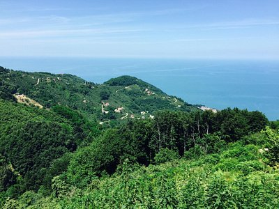
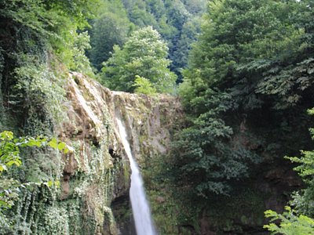
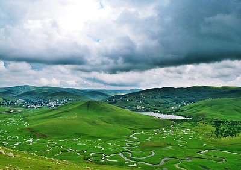

Ordu, Türkiye'nin bir ilidir. Merkezi Ordu olan ilin 2023 yılı verilerine göre nüfusu 763.190'dır. Türkiye'de sahip olduğu Karadeniz ikliminden ve dağlık coğrafi konumundan dolayı en çok yağış alan 3. İldir. Karadeniz Bölgesinde Doğu Karadeniz bölümünde yer almaktadır. Ancak yeni oluşturulan ve bölgesel karışıklıkları ortadan kaldırmak için düzenlenen yeni bölgesel istatistik düzenlemelere göre Ordu ilinin tamamı Doğu Karadeniz topraklarında kaldı. İlin kuzeyinde Karadeniz, güneyinde Tokat ve Sivas illeri, batısında Samsun, doğusunda Giresun ili vardır. Büyükşehir statüsünde olan Ordu, 19 ilçeden oluşmaktadır. Yüzölçümü bakımından en büyük 57'nci ildir.


